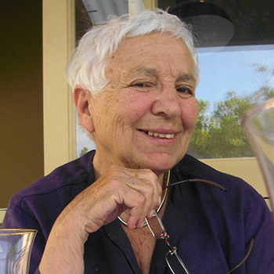

Women Who Caucus: Feminist Political Scientists
It's hard to remember what Australia was like in the early seventies … it was a bloke's world, it was shaped by blokes, talked about by blokes and constructed around their lives and needs.
Elizabeth Reid, the first adviser on women’s affairs to an Australian Prime Minister (Gough Whitlam in 1973), spoke the above words in a 2005 ABC Stateline interview. Now it is even harder to remember because of the years that have passed. The Australian Women’s Archives Project has produced Women Who Caucus: Feminist Political Scientists to ensure these times and the women who played significant parts in working towards a more gender-inclusive Australia are remembered.
The project captures some of the key people and events in the story of women in Australian political science, but is by no means comprehensive. It has been enabled by a bequest from Thelma Hunter, one of Australia’s early female academics who died in 2016.
The revolution that was women’s liberation in Australia in the 1970s exposed the fact that, as Reid said, Australia was ‘a bloke’s world’. Australian women became increasingly aware of the limitations on them, particularly around birth control, access to employment and occupations, childcare, equal pay, sexist and discriminatory language in texts and advertising and the newly emerging issues of domestic violence and sexual harassment. A group of women, including Anne Summers, realised they would have to shape their own future through direct action like protests to gain media attention as well as lobbying to win funding for newly established women’s refuges and health services.
For the few women then in the political science discipline, women’s liberation highlighted and validated their awareness of male domination of the profession. Not only were there few women in political science positions in academia, but little interest had been shown in women as voters and the underlying structure of power. As Marian Sawer was to note some 30 years later:
the discipline of political science, to a much greater extent than cognate disciplines such as history or sociology, has remained male-dominated in most parts of the world. As feminist critics have observed, there are likely to be oversights when a male-dominated discipline investigates a male-dominated political system. Such oversights include taking male politics as the norm, or failing to see gendered relations of power as barriers to equal citizenship.
Murray Goot and Elizabeth Reid’s 1975 critique of the treatment of women in voting studies (subtitled ‘Mindless Matrons or Sexist Scientism?’), was, as Marian Simms wrote in 1984, ‘replete with references to absences’. In 1979 when Marian Sawer surveyed the status of women in political science departments around Australia, she found there were still few women present in the discipline. The most common pattern was for there to be one woman in a department and the prevailing attitude was if departments had one woman on staff, there was no need for another. Women held 11% of tenured positions and 28% of PhD candidates were female.
A few years earlier, in 1972, British political scientist Carole Pateman had arrived in Australia to teach at the University of Sydney’s Department of Government. Already an established figure in political science through her book Participation and Democratic Theory (1970), she was significant in introducing feminist critique into Australian political science. At the annual Australasian Political Studies Association (APSA) conference held in Hobart in 1979, Pateman and Sawer co-founded the Women’s Caucus to improve the standing of women in the political science profession and to promote the study of women and politics.
Significant changes resulted from this. First, the all-male APSA Executive slate was immediately revised and Pateman nominated as Vice-President. Before this, the only female president had been Joan Rydon – no feminist but ironically made President for International Women’s Year (1975–76). Second, Sawer initiated surveys of women in the profession, mentioned above, raising awareness of how poorly they were represented. Third, Women’s Caucus streams became a regular feature at APSA conferences and attracted high-quality and ground-breaking papers, a number of which were published in a special symposium put together by Simms in Politics (17:2), and in a book that she edited in 1984, Australian Women and the Political System.
The Women’s Caucus stream of the 1981 Conference organised by Sawer radically offered a free crèche and had a good mix of practitioners and political scientists. Women brought to the conference issues that particularly related to them. Papers included Senator Susan Ryan’s attack on the absence of research into women’s voting behaviour and Meredith Edwards on the control of family finances.
At the 1981 APSA conference, discussants for the Women’s Caucus stream included Anne Summers (then Associate Editor of the Australian Financial Review), Gail Radford (head of the Equal Employment Opportunity Bureau of the Australian Public Service), sociologist Dorothy Darroch, and political economist Margaret Power. Pateman delivered a landmark Presidential Address in which she drew attention to ‘the failure of the discipline to construct the status of women as a political problem’ (Sawer, The Impact of Feminist Scholarship on Australian Political Science, 2004).
After the conference, inspired by Pateman’s address, Hunter, who had lectured in political science at the ANU from 1965 to 1979, published an Op Ed in the Canberra Times entitled ‘Academic feminism gathers strength’. In it she stated that academic feminism is ‘building up a body of intellectual ammunition … to put up a good fight against entrenched orthodoxies, about their own social and political behaviour’ (23 September 1981). She noted that this is reinforced by women’s own informal networks within and outside academia and attributed the strengthening on both fronts to the women’s caucus.
Prior to the women’s caucus, the political activities of Australian women were of little interest to political scientists, under the assumption that women belonged in the private arena while politics occurs in the public arena. Male politics were viewed as the norm.
Of the women included in this exhibition, the caucus was founded on the initiative of Pateman and Sawer; Summers was on the first judging panel for the APSA Women and Politics Prize established by Sawer in 1981, along with Dame Beryl Beaurepaire, Senator Susan Ryan, Jenny Hutchison, Jocelynne Scutt, Elaine Thompson and Sawer herself. Verity Burgmann was involved from the early days, as was Simms. Hunter had been Simms’ tutor in her first year at the ANU, introducing her students to a wider societal perspective in her political sociology lectures and through her supervision. Burgmann had been inspired by Pateman and was concerned when Pateman left Australia for the USA.

Mrs Thelma Hunter, Lecturer in Political Science at Australian National University, 1966
Pateman’s 1988 book The Sexual Contract added the critical concept of the ‘fraternal contract’ to the longstanding idea of the social contract, to show how the formal overthrow of patriarchy in the foundation myth of the liberal state was accompanied by the reinforcement of patriarchy in the ‘private’ sphere, including the marriage contract, employment contract and prostitution contract. Pateman’s work has been credited with bringing feminism into mainstream political theory. Despite being the most cited political scientist in Australia by a wide margin, Pateman left Australia in 1990 after her applications for political science chairs at Australian universities were unsuccessful, taking up the role of Professor of Political Science at University of California, Los Angeles.
While women’s place in Australian political life is still far from normalised, the contribution of these women has shown how a gender lens can sharpen the focus of political science and inform strategies for change.
Sources
Published resources
- Simms, Marian, 'Political Science, Women and Feminism', in Australian Women and the Political System, Longman Cheshire, Melbourne, 1984.
- Sawer, Marian and Simms, Marian, A Woman's Place: Women and Politics in Australia, 2nd edn, George Allen and Unwin, Sydney, 1993, 345 pp.
- Sawer, Marian, 'The Impact of Feminist Scholarship on Australian Political Science', Australian Journal of Political Science, vol. 39, no. 3 (November), 2004, pp. 553-66.
- Jaensch, Dean, 'A History of the Australasian Political Studies Association', in Rhodes, R A W (ed.), The Australian Study of Politics, Palgrave Macmillan, Basingstoke and New York, 2009, pp. 47-68.
Online resources
- Renwick, Emma, 'The Life of Elizabeth', in ABC Stateline, 5 May 2005, http://www.abc.net.au/stateline/act/content/2005/s1432182.htm.
- Cowden, Mhairi, McLean, Kirsty, Plumb, Alison and Sawer, Marian, Women's Advancement in Political Science, Workshop Report, 2012, https://ssrn.com/abstract=2110687.
- AWAP Project Team, 'Reid, Elizabeth Anne', in The Encyclopedia of Women & Leadership in Twentieth-Century Australia, 2014, http://www.womenaustralia.info/biogs/AWE0023b.htm.
- Harrison, Sharon M, 'Sawer, Marian', in The Encyclopedia of Women & Leadership in Twentieth-Century Australia, 2014, http://www.womenaustralia.info/leaders/biogs/WLE0518b.htm.
- Burn, Margy, 'Hunter, Thelma Anna Carmela (1923 - 2016)', in The Australian Women's Register, 2017, http://www.womenaustralia.info/biogs/AWE0006b.htm.
- Land, Clare, Francis, Rosemary and AWAP Project Team, 'Reid, Elizabeth Anne (1942 - )', in The Australian Women's Register, 2017, http://www.womenaustralia.info/biogs/AWE0023b.htm.
- Sawer, Marian and Shapley, Maggie, 'Sawer, Marian', in The Australian Women's Register, 2017, http://www.womenaustralia.info/biogs/AWE4903b.htm.
The Australian Women's Register exhibitions
- From Lady Denman to Katy Gallagher: A Century of Women's Contributions to Canberra, Australian Women's Archives Project, February 2013, http://www.womenaustralia.info/exhib/ldkg.